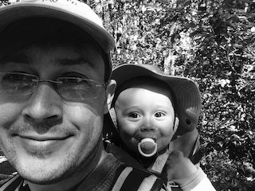

Graham Freeman

Howdy! I'm Graham Freeman. I'm a SuperNerdDad in Berkeley, California. (UTC-0800)
Professional
Through my company NerdVentures, I help mission-driven organisations to use technology effectively.
Recent projects that I'm particularly proud of:
- Complete re-vamp of a customer's IT infrastructure. New network, new PCs, new software, new email provider, and a security+performance proxy in front of their custom web
site. All in budget. Now their entire staff is able to reliably focus on their work, instead of being constantly stymied by IT issues like they were before they came to
me.
- An SMS-XMPP (Jabber) gateway on Google Compute Engine + Twilio, with tie-ins to Helpscout and Highrise, so as to provide customer support with multiple
customer support agents presenting a cohesive and unified customer-facing interface at a cost of almost $0/month.
- A web presence which is Git-managed, HTTP/2 and SPDY-enabled, TLS 1.2 and DNSSEC-encrypted, IPv4+IPv6-connected, WAF-protected, and reliably monitored with two
layers of monitoring methodologies/vendors.
- Several 700Mbps roofmount wireless network links, using Ubiquiti AirFiber 24GHz, for fast internet uplinks and to extend a company's network from one building to
another. Another 1Gbps link deployment currently in progress, using Siklu 80GHz gear.
- Reliable+scalable monitoring/management/security for a diverse group of remote users, using a combination of AD on Azure, Opswat Gears, OpenDNS Umbrella, Cisco
Meraki Systems Manager, and osquery.
- Network-bootable malware scanner, to identify which of several hundred neglected PCs were infected and thus needed re-imaging. Used Linux with a custom initrd,
clamscan (set to be very sensitive) for initial local scanning, and submission to Google's VirusTotal API for verification/refutation of malware detection results.
Included some filtering (specific to the customer) to avoid sending sensitive data to Google.
- Salesforce email redirect solution to 100% reliably redirect emails in dev/QA sandboxes to QA & Dev teams instead of actual customers. Back-end a mixture of AWS
Lambda, AWS CloudWatch, DigitalOcean, Mailgun, and of course PagerDuty.
Previously, from 2011-2015, I was technical lead in the areas of systems, networking, and information security for a multi-national solar company. My work was called out by a major investor as a major factor in their decision to invest. I left in early 2015 in order to live a more balanced life.
My LinkedIn profile is a good representation of my professional history.
Personal
Most importantly, I'm a doting family man, and I have a strong interest in engaging in the world around me. I'm especially fond of e-bikes and solar power.
Contact Me